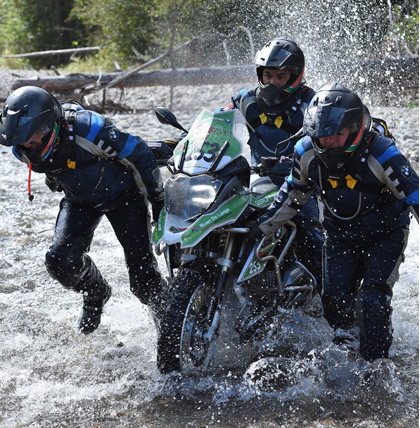

-

2016.02.27
GS TROPYH 2016赛事直播间今日开播
The GS Trophy is an Enduro adventure that takes place every two years. In 2016 from 28 February to 5 March, it is time to go for the fifth time already: 19 international teams compete in several daily stages and numerous special challenges in the most impressive landscapes of Southeast Asia.


The GS Trophy is an Enduro adventure that Trophy is an Enduro adventure that Trophy is an Enduro adventure that Trophy is an Enduro adventure that Trophy is an Enduro adventure that ...
The GS Trophy is an Enduro that ...
The GS Trophy is an Enduro that ...
回复 更多 -
2016.02.27
GS TROPYH 2016赛事直播间今日开播
The GS Trophy is an Enduro adventure that takes place every two years. In 2016 from 28 February to 5 March, it is time to go for the fifth time already: 19 international teams compete in several daily stages and numerous special challenges in the most impressive landscapes of Southeast Asia.
The GS Trophy is an Enduro adventure that Trophy is an Enduro adventure that Trophy is an Enduro adventure that Trophy is an Enduro adventure that Trophy is an Enduro adventure that ...
The GS Trophy is an Enduro that ...
The GS Trophy is an Enduro that ...
回复 更多

加载更多 ...